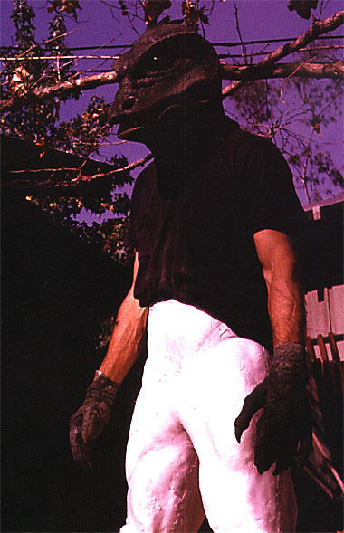
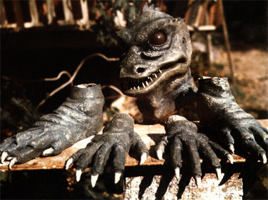
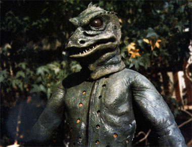
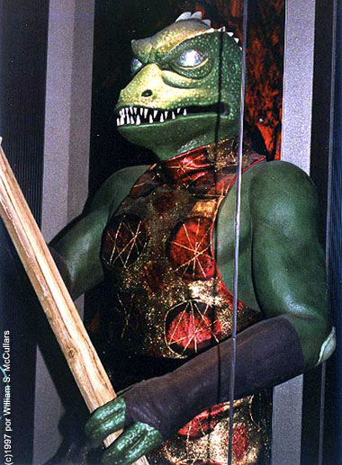
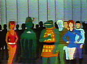
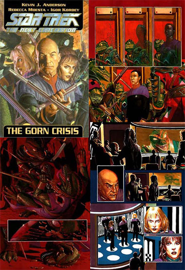
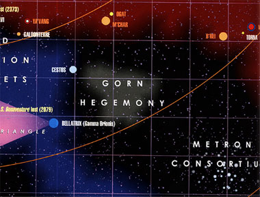
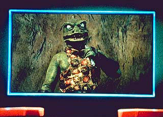

|
por Fernando
Penteriche
Alienígenas de Jornada nas Estrelas não são apenas variações de humanos que apresentam mudanças em testas ou narizes, pintas pelo corpo ou antenas na cabeça. No episódio da
Série Clássica "Arena", fomos apresentados a uma raça que obviamente não era mamífera... os Gorns! Porém, embora tenham surgido há mais de 35 anos, nem sequer foram utilizados nas diversas séries da franquia desde então.
Para falar em Gorn é indispensável citar Wah Chang, talentoso artista plástico que foi o responsável pela criação do comunicador que Kirk levava na cintura, pela nave e capacete utilizados pelos Romulanos em
"Balance of Terror", além da harpa vulcana de Spock, os
pingos (tribbles), o agressivo habitante de Taurus II visto em "The Galileo Seven" e muitas outras criações. Também saiu de sua prancheta o visual do alienígena verde e cabeçudo que funcionou como o alter-ego de Balok em
"The Corbomite Maneuver" e do alienígena "sugador de sal" do episódio
"The Man Trap", uma de suas criações mais memoráveis, junto a um certo ser reptílico que atormentou Kirk em Cestus III.
"Arena", episódio do primeiro ano da Série Clássica, mostra a tripulação da Enterprise descobrindo que um posto avançado da Federação que existia no planeta Cestus III foi completamente destruída por um ataque. O grupo avançado que desembarca no planeta também é alvo de uma emboscada, sendo
o chamado do planeta que a Enterprise havia recebido um engodo para uma cilada. Kirk e sua tripulação saem então atrás da nave alienígena inimiga e logo as duas se vêem no território de uma raça avançada, os Metrons, que resolvem decidir a disputa colocando o capitão Kirk e o comandante da outra nave, da raça Gorn, em um planeta em que deverão decidir "na mão", e construindo suas próprias armas com recursos do planeta, qual das naves será destruída junto com sua tripulação. Kirk consegue ao final derrotar o Gorn mas se recusa a matá-lo, fato que deixa os Metrons impressionados, fazendo assim com que as duas naves sejam libertadas.
A história, escrita por Gene Coon a partir de um conto de Frederick L. Brown, que inclusive leva seu nome nos créditos do episódio, mostra como a superação de preconceitos pode fazer com que a Humanidade atinja seu lugar junto às demais raças que habitam a
galáxia e possa viver em paz com elas. A "roupa de Gorn" criada por Wah Chang era extremamente desajeitada e quente demais. Por esse motivo, o diretor Joseph Pevney resolveu colocar um dublê para utilizar a vestimenta, afinal esse profissional está acostumado a fazer o que os atores não querem (ou não podem) e não ter seu rosto visível. Pevney recrutou Gary Cooms e Bobby Clark para se revezarem na função. Hoje em dia isso pode não causar nenhum espanto, mas na época diretores e produtores não confiavam muito em colocar dublês para atuar, mesmo em situações
como a de "Arena". "Os produtores não acreditavam que dublês poderiam ser talentosos", disse o diretor Pevney. Mas no caso específico deste episódio, Cooms e Clark não precisaram se esforçar muito para fazer um personagem como o Gorn, que nem expressões faciais tinha. Precisavam apenas se movimentar de forma lenta.

Um proto-Gorn começa a nascer... note
a ausência da prótese do tronco e as pernas ainda sem pintura
As patas (ou mãos e pés) de nosso
lagartão favorito, junto à cabeça do bicho
Repare o moderno sistema de
ventilação para quem vai dentro do Gorn
A vestimenta do lagartão foi criada em várias partes separadas para ajudar os dublês na hora de vesti-la, sendo que esse recurso ainda facilitava a filmagem de cenas em que o Gorn não apareceria por completo. Assim, se fosse necessário que apenas a mão ou cabeça aparecesse, apenas isso seria vestido pelo dublê. Como a locação em que parte da ação é filmada era muito quente, Wah Chang colocou vários orifícios para que o ator com a vestimenta não derretesse, já que a própria fantasia era como um forno. Esses orifícios foram cobertos pelo uniforme do personagem, que sem dúvida era retirado na primeira oportunidade em que as câmeras fossem desligadas. A voz e os grunhidos do Gorn foram feitos por Vic Perrin, que também dublou o Metron. Existe uma réplica da fantasia do personagem (e também do "sugador de sal" de Wah Chang) criada pelo Grupo KNB EFX de Los Angeles na "The Viacom Store" em Chicago.

 Canonicamente, acaba aí a participação dessa raça em
Jornada nas Estrelas, pelo menos até o presente momento. Porém no episódio
"The Time Trap", da Série Animada, mais um Gorn é visto como figurante. O episódio também apresenta dezenas de naves espaciais e muitas outras raças alienígenas, algo impensável para um episódio que não fosse de animação.
"The Time Trap" marca ainda a última aparição de um Klingon com testa lisa em um episódio da franquia, mas sempre deve ser lembrado que a Paramount não considera os episódios animados como parte da cronologia oficial de
Jornada. E nesse campo não-canônico, há muitas referências aos verdões de sangue-frio com mais de
dois metros de altura.
Nos livros lançados pela Pocket Books, a editora oficial de Jornada e que pertence ao grupo que também é dono da Paramount, a Viacom, temos "Requiem", escrito por Michael Jan Friedman e Kevin Ryan, em que Picard é mandado de volta ao passado do planeta Cestus III pouco antes da destruição promovida pelos Gorns em
"Arena". "Dreadnought!", romance escrito por Diane Carey e que se passa na época da
Série Clássica, tem um personagem Gorn, assim como o terceiro livro da série "Gateways". Mais alguns outros Gorns, sempre sem muito destaque, às vezes surgem no mundo literário de
Jornada.
Na área dos quadrinhos, duas publicações merecem destaque. No primeiro número da revista
"Star Trek Unlimited", lançada pela Marvel em 1996, a história "Dying of the Light" apresenta a Enterprise de Kirk tendo de lidar com um arqueólogo sem escrúpulos em um planeta-cemitério dos Gorns, Lotora III. O arqueólogo finge que sofreu um acidente na superfície do planeta e envia um pedido de socorro, com o intuito de arrumar uma nave para levar artefatos que ele roubou por lá. Ao final da história, Kirk e um comandante Gorn trocam um dolorido (para Kirk) aperto de mão e a intenção de deixar as hostilidades entre as raças para trás fica no ar.
"The Gorn Crisis", uma edição em quadrinhos de luxo apresentando a tripulação do capitão Picard, traz uma missão da USS Enterprise-E durante a Guerra Dominion, vista nas últimas duas temporadas de
Deep Space Nine. Enquanto a guerra ocorre, rebeldes Gorn tentam aproveitar essa distração para lançar um ataque contra a Frota Estelar como uma vingança pela maneira como Kirk e sua tripulação trataram os Gorns em
"Arena", há mais de 100 anos. Mais do que uma história centrada em Gorns, os autores Kevin J. Anderson e Rebecca Moesta pretendiam mostrar alguma coisa que a Enterprise-E estava fazendo durante a tal guerra.

Toda a confusão criada em "Arena" deveu-se ao fato de que a Federação não sabia que Cestus III estava em território Gorn, ou Hegemonia Gorn, como tem sido adotado por livros de referência. O livro "The Worlds of the Federation" de Shane Johnson (lançado em português em 1994 pela Editora Aleph como "Mundos da Federação") traz algumas informações sobre a raça, porém que não devem ser levadas tão a sério, já que o livro é muito controverso entre os fãs. Lá é dito que o planeta natal dos Gorns é Gornar, nono planeta do
sistema Tau Lacertae, cuja estrela é uma gigante vermelha. Sobre Cestus III e a localização e extensão do território da Hegemonia Gorn, a melhor opção é o novo atlas de
Jornada lançado no ano passado pela Pocket Books, o "Star Charts" de Geoffrey Mandel.
Mandel, a partir de informações colhidas em muitas fontes (inclusive no livro de Shane Johnson), chegou
à conclusão de que o território Gorn fica no quadrante Beta da Via Láctea, o mesmo em que estão situados Vulcano, Organia, Andoria e principalmente o Império Klingon. Porém a Hegemonia Gorn está muito distante de onde se concentram a maioria dos planetas membros da Federação e dos planetas principais do Império Klingon. Cestus III fica na extremidade desse território e trata-se de um planeta classe M em que humanos e
Gorns convivem. No episódio "Family Business", de Deep Space Nine, é dito que a disputa pelo planeta foi resolvida e os colonos da Federação puderam ser assentados por lá. É estipulado que isso ocorreu em 2271 (portanto
cem anos antes do episódio e quatro depois dos eventos de "Arena"). A capital chama-se desde então Pike City (que inclusive conta com uma liga de baseball com seis times) e a população do planeta é composta por mais de 28 milhões de humanos e cerca de 7 milhões de Gorns.

Poderemos esperar os Gorns em Enterprise? Se formos seguir um raciocínio lógico, é mais fácil crer que a única maneira disso ocorrer será se os Gorns encontrarem a NX-01 por aí, já que seu território, nessa época até menor do que na
Série Clássica e Deep Space Nine, fica muito longe do setor que a Enterprise de Archer está explorando. Em
"Arena", fica claro que Kirk não conhecia a raça dos lagartões, mas é possível que a Federação já tenha tido algum contato, embora Spock explique que aquela região da
galáxia ainda era pouco explorada no século 23. Mas como é fácil notar, nada em
Enterprise parece ser impossível. Depois de alguns personagens humanóides baseados em répteis, como os Selay
("Lonely Among Us",
de A Nova Geração) e mais notadamente os Jem'Hadar, talvez possamos esperar um Gorn com um ator de verdade dentro de si em uma temporada próxima. E, desta vez, com muitos movimentos faciais.

|


{kind=link}